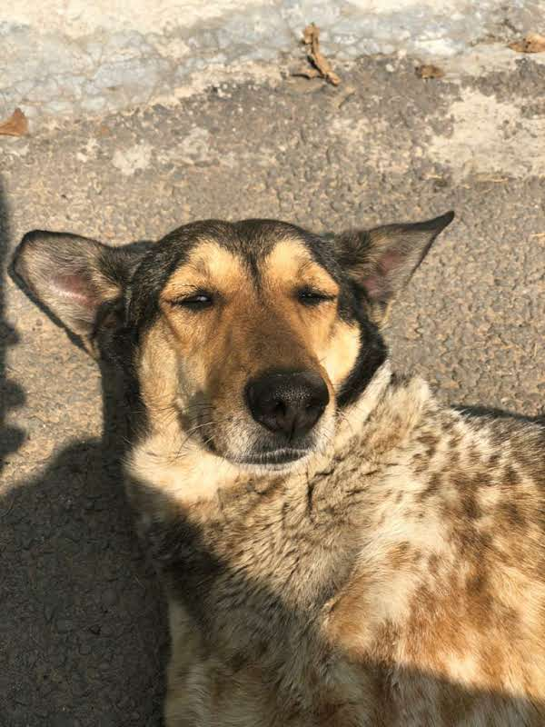
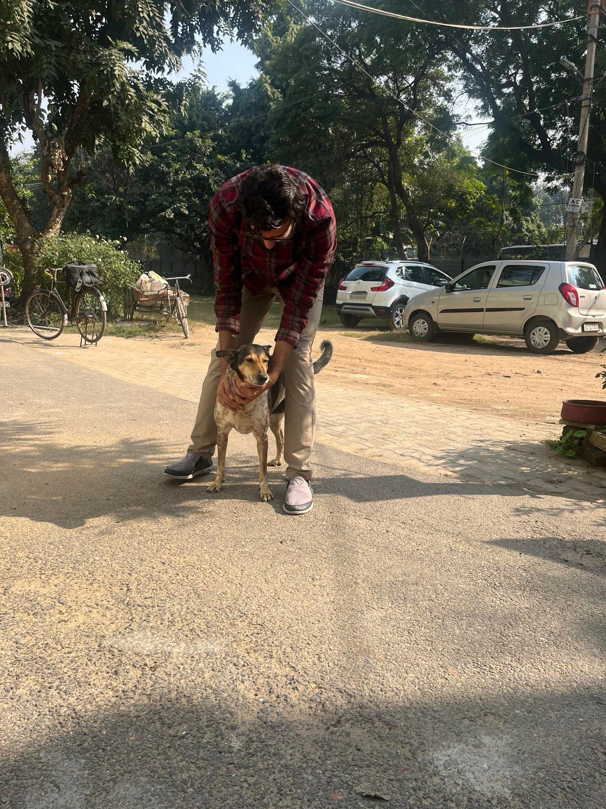
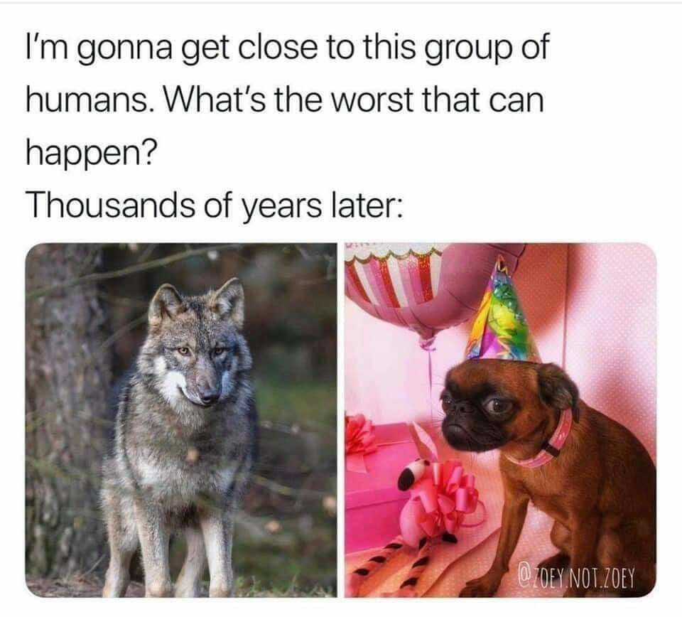

What if I told you wolf reintroductions would be one of the the most polarizing topics in modern times? Sounds crazy and I wouldn’t believe it either. That was until I recently finished reading Diane K Boyd’s memoir A Woman Among Wolves and her work on wolf recovery.
Reading her work gave me a new found appreciation for wolves and more importantly the work that goes behind in managing them.
As someone who considers himself as a ‘wildlife enthusiast’ and has no dog in this fight (pun intended), it’s just curious to see something as simple as wolves being a controversial topic. The closest thing I have had to a wolf encounter is one of our family dogs back home Champa. One quick look at her pristine coat and her sharp, elongated snout and it doesn’t take an expert ecologist to figure out she is related to wolves.


But based on my preliminary understanding of this topic, I will try my best to narrow it down.
The wolf reintroduction debate is split into two. There is the pro-wolf sentiment which calls for reintroudcting wolves to manage ecosystems.
And then on the other side of aisle there is a camp that is opposed to re-introducing wolves.
Surprisingly enough, both camps want to manage ecosystems. The difference lies in the role of wolves. Let’s try to unpack both arguments.
One of the most popular videos on wolf reintroduction is called “How Wolves Change Rivers”. If you have not watched it, I would urge you to take a moment to go see it.
The video outlines that reintroducing wolves in the Yellowstone National Park had profound impacts on the local ecology. Wolves have been responsible for moving the elk herds to such a degree that aspen and willow populations started regenerating. This in turn allowed beavers to return who started building dams and creating wetlands which attracted various songbirds, fish and amphibians.
A key concept of trophic cascades is mentioned in the video. Trophic cascades is defined as
an ecological phenomenon triggered by the addition or removal of top predators and involving reciprocal changes in the relative populations of predator and prey through a food chain, which often results in dramatic changes in ecosystem structure and nutrient cycling.
In short, wolves have been attributed to altering the trophic cascades in Yellowstone.
This is where the anti-wolf rhetoric comes in. For starters, the concept of trophic cascades is highly debated in the scientific community. More specifically, it is around the magnitude of the overall impact. The question is ‘Have wolves actually impacted plants?’
Diane talks about this in the book as well
Researchers, however, have shown that elk populations are affected by a combination of climate change, drought, fire, winter severity, grizzly bears, black bears, mountain lions, coyotes, and human hunters, in addition to wolves. Sorting out which component has had the most impact on elk has not yet been accomplished and likely never will be; relationships between weather, plant productivity, animal nutrition, carnivore and elk use of space, and competition between several species of animals are intricately entwined.
If I were to put on my statistics hat, this is a classic example of ‘confounding variables’, i.e. mulitple variables that could potentially have an impact on the relationship between the dependent and the independent variables. So according to Diane, to say that wolves have been responsible for influencing local ecosystems might be a big stretch especially when factors like weather patterns may be at play.
This brings us to a follow-up question “Are wolf reintroductions warranted?”
To answer that question, some historical context is necessary.
Up until the 1900s, wolf populations were rapidly declining as they were being trapped, hunted and poisoned. Wolves were almost driven to the brink of extinction and it wasn’t until late 20th century when regulations like the Endangered Species Act in 1974 put them in an endangered category. Eventually, wolf populations started rebounding and recolonizing landscapes across North America and Europe from which they had been extirpated a hundred years earlier. This trend was being observed across the world and now thanks to the recovery efforts, Canis lupus is considered to be of Least Concern by the International Union for Conservation of Nature (IUCN).
Another equally controversial aspect of the wolf reintroduction debate is ballot box biology, i.e. the act of putting biological decision making up for popular vote. Wildlife conservationists seem to love it whereas hunters vehemently hate it. The way I look at it is that both sides have reasonable arguments. On one hand, it is a fairly democratic process by letting the majority decide the outcome. The argument against that would be how can you expect the majority to decide when they don’t even have a skin in the game. In other words, how can city dwellers expect to understand the problems of rural folks who have to deal with these wildlife encounters?
We also need to factor in our complex relationship with these creatures. Throughout human history and across cultures, the image of the ‘Big Bad Wolf’ has lived on. Yet, when we look at the stats that Diane shares in the book, the fear almost seems irrational.
Studies suggest that dog bites account for tens of millions of injuries annually. While dog bites can result in serious and sometimes disfiguring injuries, most canine attacks are not deadly. In fact, only around 30 to 50 people die due to dog bites annually.
Over 130 attacks by mountain lions have been documented in North America in the past 100 years, with 28 attacks resulting in fatalities.
From 2000 to 2020, 25 people were killed by wild black bears across North America, roughly one attack per year. In the last 20 years, approximately 30 to 40 people were killed by grizzlies in North America.
Cows kill roughly 20 people per year in the U.S.
Approximately, two people are killed annually in the U.S. after tipping over a vending machine.
In North America, approximately two dozen attacks (mostly non-fatal) of people by wild wolves have been documented in the past one hundred years. Some of these people were bitten by rabid wolves and eventually died from rabies rather than from the initial bite. Only two human fatalities have been documented in North America in the past 25 years.
Is this to say wolves are not dangerous? Absolutely not. They are highly intelligent, apex predators and we should avoid them as much as we can. But there is something to be said about our relationship with wolves. It almost seems paradoxical that the direct descendants of wolves became ‘man’s best friend’. Yet our fear lives on.

Daine perfectly sums up this ongoing discussion on wolf recovery and reintroductions:
Wolf recovery is all about people and very little about wolves. Wolf management comes down to human management.
Despite our best efforts to eradicate them, they have managed to survive. According to Diane, it is because wolves are extremely resilient. It’s part of the reason why they are now dispersed across Canada, Alaska, parts of the lower 48 states, Mexico, most of western Europe, Israel, and India.
I almost feel like Dr. Ian Malcom from Jurassic Park doing his famous “Life Finds a Way” speech.
Wolves just happen to be a living testament to that statement. Somehow they found a way to live with us along with millions of other species.
As the world continues to change, one of the things we will need to navigate is how do we coexist not just with wolves but other species as well. Like it or not, the fate of almost every species on this planet is in our hands. The question is - what are we going to do with it?